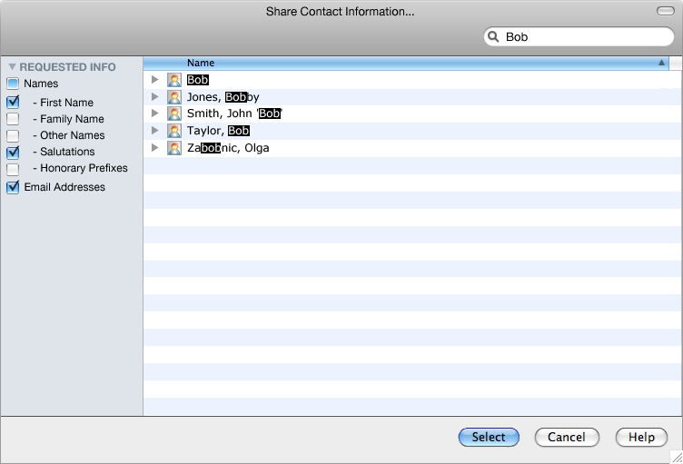

This document provides some background on the threats to users' privacy that Javascript APIs help create on the Web, and provides some patterns to mitigate such threats at the API design level. Its primary audience is therefore people involved in the definition and implementation of such APIs.
This document is a draft TAG finding, and as such has no official standing whatsoever.
This document is a work in progress from the W3C Technical Architecture Group (TAG). Additional TAG findings, both accepted and in draft state, may also be available. The TAG may incorporate this and other findings into future versions of the [[WEBARCH]]. Please send comments on this finding to the publicly archived TAG mailing list www-tag@w3.org (archive).
User privacy is a core feature of the Web. As the Web continues its evolution into a powerful application platform, an increasing number of its additional abilities risk compromising user privacy unless they are specifically created to promote it. While potentially present in all aspects of the Web platform, this issue is particularly salient when it comes to Javascript APIs since they comprise one of the most frequent and natural extensibility point for powerful features that can be misused, and that are hard to mitigate against.
This leads to a strong requirement on these APIs to take user privacy into account from the earliest steps in their conception. This, in turn, imposes design constraints that are different from those found in more traditional applications programming which entails that experience with APIs designed for the latter seldom applies in full and needs to be revisited.
User privacy on the Web is a multifaceted topic which defies easy answers often causes great disagreement and debate. This document does not seek to analyse all facets of Web privacy. However, it does recognise the fact that awareness of Web privacy issues is on the rise, both on the part of Web users and Web developers. Over the past three years, the W3C has run several workshops and launched two new groups on topics related to user privacy. The IETF has also strongly expanded its activities in the privacy space. Strong privacy laws are in force in many parts of the world and being discussed in others.
Privacy on the Web is a topic that overlaps technical, social, regulatory and emotional barriers and is therefore difficult to pin down when creating a technical specification. This paper therefore chooses to focus on a deliberately limited subset of the problem space.
In this document we consider only those aspects of privacy and APIs that can be mitigated by API designers, such as providing more information than is necessary for a given operation, not making it possible for the user to control what information is being shared, and device fingerprinting. Conversely we do not cover other privacy attacks such as tricking the user into providing information or maliciously using collected information in ways that were not agreed to by the user. We have chosen this focus because well-designed APIs from the privacy standpoint should provide a solid foundation for better user privacy in general, because they can help address the problem at the root, and because we feel that they form a coherent whole.
It is important in reading this document that its ambition is simply to capture known best current practices in API design in order to help spread them amongst groups, and so as to provide a common starting point on top of which further privacy-enhancing API design patterns can be built. Its content is therefore not expected to remain static for all of eternity, but rather to evolve so as to capture the community's knowledge of this domain.
Privacy is a very broad topic that covers most parts of the technological stack as well as its relationship to society. Rather than attempt to “boil the privacy ocean” and address the entirety of the issue at once, it is the firm opinion of this document's authors that the users' privacy will be best served by addressing the problem separately at each layer that it touches so as to avoid the architectural infelicities involved in crossing layer boundaries with a single solution. Such well-scoped changes can furthermore be deployed quickly and provide the greater leverage of being accepted in their respective communities. There are therefore many privacy issues that this document does not address; we can only encourage others to attempt similar exercises across the board. Note that while the TAG's remit reaches well beyond API design and thus leaves the door open for further TAG work on privacy, this specific domain was selected as an area of high priority due to the great number of APIs being designed concurrently at this time.
It is common for discussions of these privacy issues to raise objections that they are a matter of security and not privacy. Conversely, if raised as matters of security, objections will surface according to which they constitute a specifically privacy problem.
Overall, it is certainly the case that privacy threat models and security threat models are for the most part very different. But for the cases covered in this document they overlap in such a manner that the only differentiating factor is the attacker's intent or what happens to the private information once it has been acquired. Since the chosen scope restricts us to not leaking said information in the first place, the difference amounts to splitting hairs.
It is therefore the authors' considered opinion that this distinction is both immaterial and irrelevant. Both privacy and security are fundamental promises of the Web user agent; when they are broken users suffer and the Web dysfunctions. Providing the means to address the issues raised in this document is therefore a positive step forward irrespective of the way in which they are categorised.
This section introduces some of the background thinking and history behind the development of this document.
In their 1975 paper The Protection of Information in Computer Systems, computer scientists Jerome Saltzer and Michael Schroeder articulated a principle of “least privilege:”
Every program and every user of the system should operate using the least set of privileges necessary to complete the job. Primarily, this principle limits the damage that can result from an accident or error. It also reduces the number of potential interactions among privileged programs to the minimum for correct operation, so that unintentional, unwanted, or improper uses of privilege are less likely to occur.
Although written long before the Web came into use and firmly form a security standpoint, Saltzer and Schroeder's definition could apply as easily to the distributed world of Web applications as they did to time-sharing mainframe programming of the 1970s.
Today, client-side Web applications are increasingly playing a role as intermediates for our personal, privileged information between the devices we carry and applications residing somewhere on the Internet.
In the “Terminology for Talking about Privacy by Data Minimization: Anonymity, Unlinkability, Undetectability, Unobservability, Pseudonymity, and Identity Management”, Andreas Pfitzmann, Marit Hansen, and Hannes Tschofenig succinctly define minimisation as a strategy towards implementing enhanced privacy in (personal) data collection and usage:
Data minimization means that first of all, the possibility to collect personal data about others should be minimized. Next within the remaining possibilities, collecting personal data should be minimized. Finally, the time how long collected personal data is stored should be minimized.
Data minimization is the only generic strategy to enable anonymity, since all correct personal data help to identify if we exclude providing misinformation (inaccurate or erroneous information, provided usually without conscious effort at misleading, deceiving, or persuading one way or another) or disinformation (deliberately false or distorted information given out in order to mislead or deceive).
Furthermore, data minimization is the only generic strategy to enable unlinkability, since all correct personal data provides some linkability if we exclude providing misinformation or disinformation.
In attempting to apply these principles to the area of client-side Web APIs, the W3C Device APIs Working Group has refined this definition within their Device API Privacy Requirements.
- APIs MUST make it easy to request as little information as required for the intended usage. For instance, an API call should require specific parameters to be set to obtain more information, and should default to little or no information.
- APIs SHOULD make it possible for user agents to convey the breadth of information that the requester is asking for. For instance, if a developer only needs to access a specific field of a user address book, it should be possible to explicitly mark that field in the API call so that the user agent can inform the user that this single field of data will be shared.
- APIs SHOULD make it possible for user agents to let the user select, filter, and transform information before it is shared with the requester. The user agent can then act as a broker for trusted data, and will only transmit data to the requester that the user has explicitly allowed.
“Privacy by design” is a relatively loaded term which has taken on multiple different definitions depending on context. However, since it is the term of trade that has been in use in groups tasked with defining Javascript APIs over the past few years, we have chosen to keep it, while ensuring that a specific definition is provided here.
Within the scope of this document, privacy by design is a design approach that takes malicious practices for granted and endeavours to prevent and mitigate them from the ground up by applying specific patterns to the creation of Javascript APIs.
It is particularly important in privacy by design that users be exposed to as few direct privacy decisions as possible. Notably, it should never be assumed that users can be “educated” into making correct privacy decisions. The reason for this is that user typically interact with their user agent in order to accomplish a specific task. Anything that interrupts the flow of that task's realisation is likely to only be given as cursory a thought as possible. Therefore, requiring users to make privacy decisions whilst in the middle of accomplishing a task is a recipe for poor decisions.
There are two primary issues that privacy by design seeks to address within the scope of Javascript APIs.
In order to accomplish a given operation, a Web application may legitimately require access to some of the user's private information. The issue here is that in providing access to the required information can sometimes entail exposing a lot more information. For instance, when the user wishes to share one event in their calendar, the entire calendar becomes available; or where the user needs to share the name and email addresses of some of their contacts, the phone numbers, pictures, home addresses, etc. of these contacts are also returned.
Users are routinely tracked across the Web through the use of cookies and other such identification
mechanisms. In many cases, these tracking methods can be successfully mitigated by the user agent, for instance
by only returning cookies for the top level window in the browsing context (as opposed to providing them
for iframes for instance).
Fingerprinting circumvents this by looking at as many of the unique features of a user agent in order to ascertain its uniqueness. For instance, it may look at screen resolution, the availability of specific plugins, at the list of fonts that are installed on the system, the user agent string, the timezone, and a wealth of information that user agents tend to provide by default. Taken one by one, none of these data are sufficient to identify a single user, but put together they collect enough bits to narrow the identification down to just the one person — especially if you take into account the population that visits a given site or set of sites.
A very good demonstration of fingerprinting, alongside with a paper detailing the approach, are available from Panopticlick — How Unique and Traceable is Your Browser?
The Web application platform requires the availability of a vast array of functionality that can greatly vary in nature. As a result, not all APIs can look the same, and no single approach can be applied automatically across the board in order to take privacy into account during API design. This section therefore lists patterns that API designers are expected to adapt to the specific requirements of their work.
We seldom pause to think about it, but the manner in which mouse events are provided to Web applications is a good example of privacy by design. When a page is loaded, the application has no way of knowing whether a mouse is attached, what type of mouse it is (let alone which make and model), what kind of capabilities it exposes, how many are attached, and so on. Only when the user decides to use the mouse — presumably because it is required for interaction — does some of this information become available. And even then, only the strict minimal is exposed: you could not know whether it is a trackpad for instance, and the fact that it may have a right button is only exposed if it is used.
This is an efficient way to prevent fingerprinting: only the minimal amount of information is provided, and even that only when it is required. Contrast it with a design approach that is more typical of the first proposals one sees to expose new interaction modalities:
var mice = navigator.getAllMice();
for (var i = 0, n = mice.length; i < n; i++) {
var mouse = mice[i];
// discover all sorts of unnecessary information about each mouse
// presumably do something to register event handlers on them
}
The “Action-Based Availability” design pattern is applicable beyond mouse events. For instance, the Gamepad API makes use of it. It is impossible for a Web game to know if the user agent has access to gamepads, how many there are, what their capabilities are, etc. It is simply assumed that if the user wishes to interact with the game through the gamepad then she will know when to action it — and actioning it will provide the application with all the information that it needs to operate (but no more than that).
By default, the user agent should provide Web applications with an environment that is privacy-safe for the user in that it does not expose any of the user's information without her consent. But in order to be most useful, and properly constitute a user agent, it should be allowed to occasionally punch limited holes through this protection and access relevant data. This should never happen without the user's express consent and such access therefore needs to be mediated by the user.
At first sight this appears to conflict with the requirement that users be asked to make direct privacy decisions as little as possible, but there is a subtle distinction at play. Direct privacy decisions will prompt the user to provide access to information at the application's behest, usually through some form of permissions dialog. User-mediated access will afford a control for the user to provide the requisite information, and do so in a manner that contextualises the request and places it in the flow of the user's intended action.
A good and well-established example of user-mediated access to private data is the file upload form control. If we imagine a Web application that wishes to obtain a picture of the user to use on her profile, the direct privacy decision approach would, as soon as the page is loaded, prompt the user with a permissions dialog asking if the user wishes to share her picture, without any context as to why or for what purpose. Conversely, using a file upload form control the user will naturally go through the form, reach the picture field, activate the file picker dialog, and offer a picture of her choosing. The operative difference is that in the latter case the user need not specifically think about whether providing this picture is a good idea or not. All the context in which the picture is asked for is clearly available, and the decision to share is an inherent part of the action of sharing it. Naturally, the application could still be malicious but at least the user is in the driving seat and in a far better position to make the right call.
A counter-example to this pattern can be seen at work in the Geolocation API [[GEOLOCATION-API]]. If a user visits a mapping application in order to obtain the route between two addresses that she enters, she should not be prompted to provide her location since it is useless to the operation at hand. Nevertheless, with the Geolocation API as currently designed she will typically be asked right at load to provide it. A better design would be to require a user-mediated action to expose the user's location.
This approach is applicable well beyond file access and geolocation. Web Intents are currently being designed as a generic mechanism for user-mediated access to user-specific data and services and they are expected to apply to a broad range of features such as address book, calendar, messaging, sensors, and more.
Minimisation is a strategy that involves exposing as little information as is required for a given operation to complete. More specifically, it requires not providing access to more information than was apparent in the user-mediated access or allowing the user some control over which information exactly is provided.
For instance, if the user has provided access to a given file, the object representing that should not make it possible to obtain information about that file's parent directory and its contents as that is clearly not what is expected.
During user-mediated access, the user should also be in control of what is shared. For example, if the user is sharing a list of contacts from her address book it should be clear which fields of these contacts are being requested (e.g. name and email), and she should be able to choose whether those fields are actually going to be returned or not. An example dialog for this may look as follows:

In this case the application has clearly requested that the First Name, Salutations, and Email Addresses fields be returned. If it seems unnecessary to the user, she could unselect for instance First Name before providing the list of selected contacts and the application would not be made aware of this choice. Such a decision is made in the flow of user action.
The above requires the API to be designed not only in such a manner that the user can initiate the mediation process of access to her data, but also so that it can specify which fields it claims to need.
In addition to the members of the TAG, the editors would like to thank the following individuals for their contributions to this document:
Ernesto Jiménez, Dominique Hazaël-Massieux, and Frederick Hirsch.